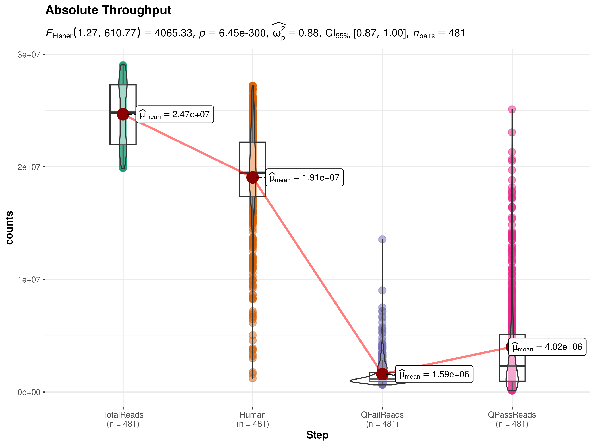
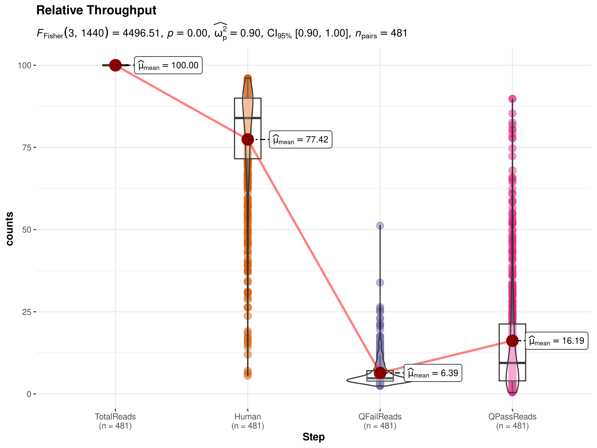

Last updated: 2024-04-19
Checks: 6 1
Knit directory:
2024_chir_hiv_rv306_vaginal/
This reproducible R Markdown analysis was created with workflowr (version 1.7.1). The Checks tab describes the reproducibility checks that were applied when the results were created. The Past versions tab lists the development history.
The R Markdown is untracked by Git. To know which version of the R
Markdown file created these results, you’ll want to first commit it to
the Git repo. If you’re still working on the analysis, you can ignore
this warning. When you’re finished, you can run
wflow_publish to commit the R Markdown file and build the
HTML.
Great job! The global environment was empty. Objects defined in the global environment can affect the analysis in your R Markdown file in unknown ways. For reproduciblity it’s best to always run the code in an empty environment.
The command set.seed(20240321) was run prior to running
the code in the R Markdown file. Setting a seed ensures that any results
that rely on randomness, e.g. subsampling or permutations, are
reproducible.
Great job! Recording the operating system, R version, and package versions is critical for reproducibility.
Nice! There were no cached chunks for this analysis, so you can be confident that you successfully produced the results during this run.
Great job! Using relative paths to the files within your workflowr project makes it easier to run your code on other machines.
Great! You are using Git for version control. Tracking code development and connecting the code version to the results is critical for reproducibility.
The results in this page were generated with repository version 412fedd. See the Past versions tab to see a history of the changes made to the R Markdown and HTML files.
Note that you need to be careful to ensure that all relevant files for
the analysis have been committed to Git prior to generating the results
(you can use wflow_publish or
wflow_git_commit). workflowr only checks the R Markdown
file, but you know if there are other scripts or data files that it
depends on. Below is the status of the Git repository when the results
were generated:
Ignored files:
Ignored: .Rhistory
Ignored: .Rproj.user/
Ignored: analysis/Study_1.png
Ignored: analysis/Study_2.png
Ignored: analysis/Study_3.png
Ignored: analysis/Study_4A.png
Ignored: analysis/Study_4B.png
Ignored: code/.RData
Ignored: code/.Rhistory
Untracked files:
Untracked: analysis/004_throughput_analysis.Rmd
Untracked: analysis/005_mre_initialization.Rmd
Untracked: analysis/007_phylosmith_abundance.Rmd
Untracked: analysis/008_phylosmith_diversity.Rmd
Untracked: analysis/009_quality_control.Rmd
Untracked: analysis/100_global_description.Rmd
Untracked: analysis/101_baseline_timepoints.Rmd
Untracked: analysis/102_starting_point_description.Rmd
Untracked: analysis/103_baseline_description.Rmd
Untracked: analysis/104_groups_comparison.Rmd
Untracked: analysis/105_longitudinal_sudy_t1.Rmd
Untracked: analysis/105_longitudinal_sudy_t2.Rmd
Untracked: analysis/105_longitudinal_sudy_t3.Rmd
Untracked: analysis/105_longitudinal_sudy_t4A.Rmd
Untracked: analysis/105_longitudinal_sudy_t4B.Rmd
Untracked: analysis/Study.jpg
Untracked: code/000_s3_bucket_initialization.Rmd
Untracked: code/001_metadata_check.Rmd
Untracked: code/002_datatransfer.Rmd
Untracked: code/003_metadata_vars_selection.Rmd
Untracked: code/006_populate_mre.Rmd
Untracked: data/RV306_CVM_2022_11_08_lims.xlsx
Untracked: data/RV306_CVM_ShippingManifest_2022_SB_clinical.xlsx
Untracked: data/preprocessed/
Unstaged changes:
Modified: analysis/_site.yml
Modified: analysis/about.Rmd
Modified: analysis/index.Rmd
Note that any generated files, e.g. HTML, png, CSS, etc., are not included in this status report because it is ok for generated content to have uncommitted changes.
There are no past versions. Publish this analysis with
wflow_publish() to start tracking its development.
library(magrittr)
bucket <- "s3://cihr-hiv-rv306"
filt_data_obj <- "vaginal/metagenome/WMGS/RawData/DataFiltering_Boxplot.rds"This is a pre-analysis of CHIR HIV RV306 Vaginal Shotgun data, aimed to assess the bacterial yield in the raw data in order to be able to make informed decisions downstream and on other projects with similar samples.
## Load data
df <-
aws.s3::s3readRDS(filt_data_obj, bucket) %>%
.[[1]] %>%
tibble::as_tibble()
df#> # A tibble: 1,443 × 3
#> SampleID Step value
#> <ord> <ord> <int>
#> 1 S014117 QFailReads 1002747
#> 2 S014255 QFailReads 13565260
#> 3 S014196 QFailReads 934245
#> 4 S014207 QFailReads 984436
#> 5 S014287 QFailReads 1311930
#> 6 S014521 QFailReads 885726
#> 7 S014264 QFailReads 3297456
#> 8 S014223 QFailReads 1164790
#> 9 S014288 QFailReads 2204796
#> 10 S014128 QFailReads 724235
#> # ℹ 1,433 more rows## Preprocessing of data
df <-
df %>%
tidyr::pivot_wider(id_cols = SampleID, names_from = Step, values_from = value) %>%
dplyr::rowwise() %>%
dplyr::mutate(TotalReads = sum(dplyr::c_across(where(is.numeric)))) %>%
tidyr::pivot_longer(names_to = "Step", cols = where(is.numeric)) %>%
dplyr::arrange(SampleID) %>%
dplyr::mutate(
Step = forcats::fct_relevel(Step, c("TotalReads", "Human", "QFailReads", "QPassReads")),
counts = value
)abs_plt <- ggstatsplot::ggwithinstats(
df,
x = Step,
y = counts,
pairwise.display = "none",
title = "Absolute Throughput",
subtitle = NULL
)#> Error in if (...length() && any(...names() == "Dimnames")) .Object@Dimnames <- fixupDN(.Object@Dimnames) :
#> missing value where TRUE/FALSE neededabs_means <- aggregate(counts ~ Step, data = df, FUN = mean)
abs_medians <- aggregate(counts ~ Step, data = df, FUN = median)
abs_plt
df1 <- df %>%
tidyr::pivot_wider(id_cols = SampleID, names_from = Step, values_from = value) %>%
dplyr::mutate(dplyr::across(where(is.numeric), ~ .x / TotalReads * 100)) %>%
tidyr::pivot_longer(names_to = "Step", cols = where(is.numeric)) %>%
dplyr::mutate(
Step = forcats::fct_relevel(Step, c("TotalReads", "Human", "QFailReads", "QPassReads")),
counts = value
)
rel_plt <-df1%>%
ggstatsplot::ggwithinstats(
x = Step,
y = counts,
pairwise.display = "none",
title = "Relative Throughput",
subtitle = NULL
)#> Error in if (...length() && any(...names() == "Dimnames")) .Object@Dimnames <- fixupDN(.Object@Dimnames) :
#> missing value where TRUE/FALSE neededrel_means <- aggregate(counts ~ Step, data = df1, FUN = mean)
rel_medians <- aggregate(counts ~ Step, data = df1, FUN = median)
rel_plt
df %>%
dplyr::filter(Step == "QPassReads") %>%
dplyr::pull(value) %>%
stats::quantile()#> 0% 25% 50% 75% 100%
#> 117462 973315 2323862 5110044 25110552As expected, there is a large percentage of reads coming from human content (mean value = ~77%, similar to Flamingo dataset). Quality pass reads are low with a mean value of approximately 4M reads but a median value of around 2M reads. This will probably affect our taxonomical characterization capabilities using marker-gene approaches, since by definition they only use a small portion of the QPass reads. Thus, non-dominant species may be frequently missed and general taxonomical characterization may be poor.
sessionInfo()#> R version 4.1.2 (2021-11-01)
#> Platform: x86_64-pc-linux-gnu (64-bit)
#> Running under: Ubuntu 22.04.4 LTS
#>
#> Matrix products: default
#> BLAS: /usr/lib/x86_64-linux-gnu/openblas-pthread/libblas.so.3
#> LAPACK: /usr/lib/x86_64-linux-gnu/openblas-pthread/libopenblasp-r0.3.20.so
#>
#> locale:
#> [1] LC_CTYPE=en_US.UTF-8 LC_NUMERIC=C
#> [3] LC_TIME=es_ES.UTF-8 LC_COLLATE=en_US.UTF-8
#> [5] LC_MONETARY=es_ES.UTF-8 LC_MESSAGES=en_US.UTF-8
#> [7] LC_PAPER=es_ES.UTF-8 LC_NAME=C
#> [9] LC_ADDRESS=C LC_TELEPHONE=C
#> [11] LC_MEASUREMENT=es_ES.UTF-8 LC_IDENTIFICATION=C
#>
#> attached base packages:
#> [1] stats graphics grDevices utils datasets methods base
#>
#> other attached packages:
#> [1] magrittr_2.0.3 workflowr_1.7.1
#>
#> loaded via a namespace (and not attached):
#> [1] nlme_3.1-164 fs_1.6.3 insight_0.19.8
#> [4] httr_1.4.7 rprojroot_2.0.4 numDeriv_2016.8-1.1
#> [7] tools_4.1.2 bslib_0.7.0 utf8_1.2.4
#> [10] R6_2.5.1 afex_1.3-1 statsExpressions_1.5.3
#> [13] colorspace_2.1-0 withr_3.0.0 tidyselect_1.2.1
#> [16] processx_3.8.4 curl_5.2.1 compiler_4.1.2
#> [19] git2r_0.33.0 cli_3.6.2 xml2_1.3.6
#> [22] prismatic_1.1.1 labeling_0.4.3 bayestestR_0.13.2
#> [25] sass_0.4.9 scales_1.3.0 mvtnorm_1.2-4
#> [28] callr_3.7.6 pbapply_1.7-2 stringr_1.5.1
#> [31] digest_0.6.35 minqa_1.2.6 rmarkdown_2.26
#> [34] base64enc_0.1-3 pkgconfig_2.0.3 htmltools_0.5.8.1
#> [37] lme4_1.1-35.1 highr_0.10 fastmap_1.1.1
#> [40] rlang_1.1.3 rstudioapi_0.15.0 farver_2.1.1
#> [43] jquerylib_0.1.4 generics_0.1.3 jsonlite_1.8.8
#> [46] dplyr_1.1.4 car_3.1-2 parameters_0.21.5
#> [49] patchwork_1.2.0 Matrix_1.6-5 Rcpp_1.0.12
#> [52] munsell_0.5.1 fansi_1.0.6 abind_1.4-5
#> [55] lifecycle_1.0.4 stringi_1.8.3 whisker_0.4.1
#> [58] yaml_2.3.8 carData_3.0-5 MASS_7.3-60.0.1
#> [61] plyr_1.8.9 grid_4.1.2 paletteer_1.6.0
#> [64] parallel_4.1.2 promises_1.3.0 ggrepel_0.9.5
#> [67] forcats_1.0.0 lattice_0.22-5 splines_4.1.2
#> [70] zeallot_0.1.0 knitr_1.46 ps_1.7.6
#> [73] pillar_1.9.0 boot_1.3-30 effectsize_0.8.6
#> [76] reshape2_1.4.4 glue_1.7.0 evaluate_0.23
#> [79] getPass_0.2-4 vctrs_0.6.5 nloptr_2.0.3
#> [82] httpuv_1.6.14 MatrixModels_0.5-3 gtable_0.3.4
#> [85] aws.s3_0.3.21 purrr_1.0.2 BayesFactor_0.9.12-4.7
#> [88] tidyr_1.3.1 rematch2_2.1.2 datawizard_0.9.1
#> [91] cachem_1.0.8 ggplot2_3.5.0 xfun_0.43
#> [94] correlation_0.8.4 coda_0.19-4.1 later_1.3.2
#> [97] tibble_3.2.1 lmerTest_3.1-3 ggstatsplot_0.12.2
#> [100] aws.signature_0.6.0 here_1.0.1